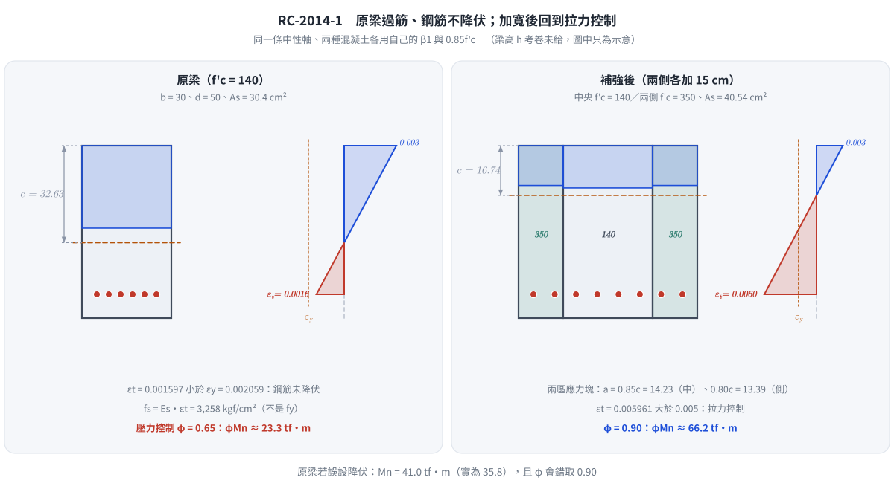

📄 題目正本：考卷原文・附圖・判讀清單（已確認）
RC-2014-1 題目正本
本檔只記錄考卷上寫了什麼、圖上畫了什麼，不含任何解法。解析見同資料夾
RC-2014-1.md。
判讀清單已經使用者確認（凍結）；本檔原則上不再修改（改動須回考卷原圖並記 log）。
| 項目 | 內容 |
|---|---|
| 考卷 | raw/exams/RC-2014_鋼筋混凝土設計與預力.pdf 第 1 頁（全一頁），第一題 |
| 考年 | 民國 103 年（2014） |
| 配分 | 25 分 |
| 附圖 | 無 |
| 判讀狀態 | 已確認（2026-11-12 使用者確認；轉錄 2026-11-12，PyMuPDF 110 dpi 全頁目視＋抽出文字核對；盲讀後才比對既有解析） |
1. 考卷原文（逐字）
一、於建築物評估時，已知一梁，b=30 cm，d=50 cm，$A_s$=6 根 D25=30.4 cm²，$f'_c$=140 kgf/cm²、$f_y$=4,200 kgf/cm²，假設規範之計算公式仍然適用，試求 $\phi M_n$。若因該梁強度不足，將其寬度向兩側各擴大 15 cm，成為 b=60 cm，d 不變，新增加之混凝土強度 $f'_c=350$ kgf/cm²，鋼筋量為 8 根 D25，$A_s$=40.54 cm²，試求其 $\phi M_n$。（25 分）
2. 考卷給的公式、附表與參數
卷首（適用全卷各題）照錄：
本科目試題之作答規範：中國土木水利工程學會「混凝土工程設計規範」（土木 401-100），未依規範作答，不予計分。（考卷此句為粗體）
可能使用之公式，但不限於：$\phi = 0.65+(\varepsilon_t-0.002)(0.25/0.003)$ $E_s=2.04\times10^6$ kgf/cm² $E_c=15000\sqrt{f'_c}$ kgf/cm²
$V_c = 0.53\sqrt{f'_c}b_w d$ $V_c = (0.50\sqrt{f'_c}+175\rho_w \dfrac{V_u d}{M_u})b_w d \le 0.93\sqrt{f'_c}b_w d$
$M_m = M_u - N_u(\dfrac{4h-d}{8})$ $\beta_1 = 0.85-0.05\dfrac{f'_c-280}{70}$ 且 $0.65 \le \beta_1 \le 0.85$
- 題文數值：原梁 $b=30$、$d=50$ cm，$A_s=30.4$ cm²（6-D25），$f'_c=140$、$f_y=4200$ kgf/cm²；補強後 $b=60$ cm（兩側各加 15 cm）、$d$ 不變、新增混凝土 $f'_c=350$、$A_s=40.54$ cm²（8-D25）。
- 沒有給：梁全高 $h$、保護層、新增 2 根鋼筋的位置（是否同一層、同一深度）、兩種混凝土共同作用時的強度取法、斷面圖。
- 卷首注意事項：㈠可以使用電子計算器；㈡不必抄題。
3. 附圖
本題無附圖。
4. 判讀清單
「把握」標不確定者請優先確認；解讀類項目（題目用字的意思）另標「解讀」。
| # | 項目 | 判讀 | 圖上／題文依據 | 把握 |
|---|---|---|---|---|
| 1 | 所求 | 兩個狀態的設計強度 $\phi M_n$（原梁、補強後） | 題文兩處都寫 $\phi M_n$ | 確定 |
| 2 | 原梁 | 矩形 $b=30$、$d=50$ cm，$A_s=30.4$ cm²，$f'_c=140$（低於規範下限，題目要求「假設規範之計算公式仍然適用」） | 題文 | 確定 |
| 3 | 補強後斷面 | 中央 30 cm 為原混凝土 $f'_c=140$，兩側各 15 cm 為新混凝土 $f'_c=350$；總寬 60 cm、$d=50$ cm | 題文「寬度向兩側各擴大 15 cm」 | 確定 |
| 4 | 補強後鋼筋 | 8-D25 為全斷面總量（原 6 根＋新增 2 根），$A_s=40.54$ cm²，視為同一 $d=50$ cm | 題文「鋼筋量為 8 根 D25」「d 不變」；8×5.067＝40.54 | 確定（解讀） |
| 5 | 兩種混凝土的處理 | 考卷未指定；可行讀法：壓力區分塊各用自身 $f'_c$ 的 $0.85f'_c$ 應力塊，或取等值強度。兩種處理試算結果相同到小數一位（見批次報告 題目正本-RC-U1-1-批1-2026-11-12.md） | 題文未說明 | 不確定（解讀）；使用者確認 |
| 6 | $\beta_1$ | 依卷首公式：140 → 0.85（上限）；350 → 0.80 | 卷首公式 | 確定 |
| 7 | $\phi$ | 依卷首公式 $\phi=0.65+(\varepsilon_t-0.002)(0.25/0.003)$，上限 0.90（規範） | 卷首 | 確定 |
| 8 | 考卷沒有給 | $h$、保護層、新增鋼筋位置、斷面圖 | 全題 | 確定 |
轉錄：2026-11-12（RC-U1-1 題目正本推廣・批 1）
確認：2026-11-12 使用者確認（RC-U1-1 題目正本推廣・批 1，關卡一）
考題編號：RC-2014-1
主分類： RC-U1-1 RC 梁彎矩強度分析與設計
副分類： （無）
設計法： USD 強度設計法
標籤： 單筋矩形梁 過筋梁 應變相容 壓力控制斷面 組合斷面加寬 雙f'c複合斷面 Whitney應力塊 β₁係數
1. 題目（考卷原文見題目正本）
考卷原文、公式／附表與判讀清單（已確認）見
RC-2014-1-problem.md。本節只列解題時最容易讀錯的地方與本解使用的記號；題意以題目正本為準。
常見誤讀
| 項目 | 正確判讀 | 常見誤讀 |
|---|---|---|
| 所求 | 兩個狀態都要設計強度 $\phi M_n$（判讀 #1） | 答標稱強度 $M_n$ |
| 補強後鋼筋 | 8-D25（40.54 cm²）是全斷面總量，同在 $d=50$ cm（判讀 #4） | 原 6 根再加 8 根 |
| 兩種混凝土 | 中央 30 cm 用 $f'_c=140$、兩側各 15 cm 用 350，分塊計算（判讀 #5，使用者確認；等值強度法答案相同） | 全寬用 350 |
| $f'_c = 140$ | 低於規範下限，題目要求「假設規範之計算公式仍然適用」 | 因不合規範而拒算 |
| 考卷沒給 | $h$、保護層、新增鋼筋位置（判讀 #8） | — |
本解記號： $b_1=30$ cm（原混凝土 $f'_{c,1}=140$）、$b_2=2\times15=30$ cm（新混凝土 $f'_{c,2}=350$）；$\beta_{1,1}=0.85$、$\beta_{1,2}=0.80$；$d=50$ cm；$c$＝共同中性軸深度。
2. 考題核心精神與出題者意圖 (Core Concepts & Examiner's Intent)
核心精神：
- Part 1：既有梁常因舊規範設計或設計不當而形成過筋梁（$\rho > \rho_b$），此時鋼筋不會降伏，須以應變相容求解真實 $f_s$，且 $\phi$ 值適用壓力控制（$\phi = 0.65$）。
- Part 2：加寬補強形成複合斷面，原核心與新增混凝土強度不同（140 vs 350 kgf/cm²），兩者 $\beta_1$ 值亦不同（0.85 vs 0.80），須分別計算各自的 Whitney 應力塊壓力。
出題者測驗能力：
- 能識別過筋梁並正確啟動應變相容（Part 1）
- 能處理不均勻 $f'_c$ 的複合斷面壓力疊加（Part 2）
- 正確判斷 $\varepsilon_t$ 並套用對應 $\phi$ 值
3. 解題戰略地圖與陷阱分析 (Strategic Roadmap & Trap Analysis)
作戰計畫：
Part 1：
Step 1 → 計算 β₁（f'c=140 ≤ 280, β₁=0.85）
Step 2 → 計算 ρb，比較 ρ → 確認過筋（ρ > ρb）
Step 3 → 應變相容：列二次方程求 c
Step 4 → 計算 εt → 得 φ（壓力控制 0.65）
Step 5 → 計算 fs、Mn、φMn
Part 2：
Step 1 → 分別算 β₁₁（140）、β₁₂（350）
Step 2 → 複合斷面力平衡：(C₁/c + C₂/c)×c = T，假設鋼筋降伏求 c
Step 3 → 驗證 εt → 得 φ（拉力控制 0.90）
Step 4 → 分別算 a₁、a₂，計算 Mn = C₁(d-a₁/2) + C₂(d-a₂/2)
Step 5 → φMn
關鍵陷阱：
| # | 陷阱 | 應對策略 |
|---|---|---|
| 1 | Part 1 誤用降伏假設：看到 $A_s$ 就直接 $a = A_s f_y / (0.85 f'_c b)$，忽略低強度混凝土可能導致過筋 | 先算 $\rho_b$，比較 $\rho$；若 $\rho > \rho_b$ 立即切換應變相容 |
| 2 | $\beta_1$ 計算錯誤：$f'_c = 350$ 時忘記折減 $\beta_1$，仍用 0.85 | $f'_c > 280$ 時：$\beta_1 = 0.85 - 0.05 \times (f'_c - 280)/70$，且 $0.65 \leq \beta_1 \leq 0.85$ |
| 3 | 複合斷面誤用單一 $f'_c$：直接用較低（或較高）$f'_c$ 套全斷面 60 cm | 兩側各 15 cm 為新混凝土，原 30 cm 核心保持舊強度，必須分開計算 |
| 4 | $\phi$ 值判斷錯誤：Part 1 為壓力控制用 $\phi=0.90$ | $\varepsilon_t < 0.002$ 用 $\phi = 0.65$；須先算 $\varepsilon_t$ 再查表 |
3.5 變數層次分析 (Variable Hierarchy Analysis)
複習提示：第一次解題後，在每個卡住的知識點旁標記
⚠；第二次複習時只看有⚠的項目。
最終目標
Part 1：過筋梁應變相容求 φMn（壓力控制）｜Part 2：複合斷面平衡求 φMn（拉力控制）
本題關鍵公式（依計算順序）
$\boxed{\cdot}$ = 需由前步驟推導，非題目直接給定的變數
Part 1（過筋梁）：
$$\text{Step 1:}\quad \beta_1 = 0.85 \quad (f'_c = 140 \leq 280)$$
$$\text{Step 2:}\quad \rho_b = \frac{0.85\,\beta_1\,f'_c}{f_y} \cdot \frac{6120}{6120 + f_y}$$
$$\text{Step 3:}\quad 0.85\,f'_c\,b\,\beta_1\,c = A_s \cdot E_s \cdot \varepsilon_{cu} \cdot \frac{d - c}{c} \;\Rightarrow\; \text{二次方程求}\ \boxed{c}$$
$$\text{Step 4:}\quad \varepsilon_t = \varepsilon_{cu} \cdot \frac{d - \boxed{c}}{\boxed{c}} \;\Rightarrow\; \phi$$
$$\text{Step 5:}\quad f_s = E_s\,\varepsilon_t,\quad M_n = A_s\,\boxed{f_s}\!\left(d - \frac{\boxed{\beta_1 c}}{2}\right)$$
Part 2（複合斷面）：
$$\text{Step 1:}\quad \beta_{1,1}=0.85,\quad \beta_{1,2} = 0.85 - 0.05\cdot\frac{350-280}{70} = 0.80$$
$$\text{Step 2:}\quad \left(0.85\,f'_{c,1}\,b_1\,\beta_{1,1} + 0.85\,f'_{c,2}\,b_2\,\beta_{1,2}\right)\boxed{c} = A_s\,f_y$$
$$\text{Step 3:}\quad a_1 = \beta_{1,1}\,\boxed{c},\quad a_2 = \beta_{1,2}\,\boxed{c}$$
$$\text{Step 4:}\quad M_n = C_1\!\left(d - \frac{\boxed{a_1}}{2}\right) + C_2\!\left(d - \frac{\boxed{a_2}}{2}\right)$$
L1：題目直接給定
| 符號 | 數值 | 說明 |
|---|---|---|
| $b_1$ | 30 cm | 原梁寬（Part 1 & Part 2 核心） |
| $d$ | 50 cm | 有效深度（兩題相同） |
| $A_{s,1}$ | 30.4 cm² | Part 1 鋼筋量（6 根 D25） |
| $f'_{c,\text{原}}$ | 140 kgf/cm² | 原混凝土強度 |
| $f'_{c,\text{新}}$ | 350 kgf/cm² | 新增混凝土強度（Part 2） |
| $f_y$ | 4,200 kgf/cm² | 鋼筋降伏強度 |
| $b_2$ | 60 cm | Part 2 加寬後總寬 |
| $A_{s,2}$ | 40.54 cm² | Part 2 鋼筋量（8 根 D25） |
| $E_s$ | 2.04×10⁶ kgf/cm² | 鋼筋彈性模數（題目提供） |
| $\varepsilon_{cu}$ | 0.003 | 混凝土極限壓縮應變（規範） |
L2：需知識點推導
Part 1 — Step 1：β₁ 與 ρb
| 符號 | 公式／來源 | 卡關? |
|---|---|---|
| $\beta_1$ | $f'_c \leq 280 \Rightarrow \beta_1 = 0.85$ | |
| $\rho_b$ | $0.85\beta_1 f'_c/f_y \cdot 6120/(6120+f_y)$ | |
| $\rho$ | $A_s/(b\cdot d) = 30.4/(30\times50) = 0.02027$ | |
| 比較 | $\rho = 0.0203 > \rho_b = 0.01428 \Rightarrow$ 過筋 |
Part 1 — Step 2：應變相容求 c
| 符號 | 公式／來源 | 卡關? |
|---|---|---|
| 力平衡 | $0.85 f'_c b \beta_1 c = A_s E_s \varepsilon_{cu}(d-c)/c$ | |
| 整理 | $3034.5\,c^2 + 186{,}048\,c - 9{,}302{,}400 = 0$ | |
| $c$ | 二次公式正根：$c = 32.63\ \text{cm}$ | |
| $a$ | $\beta_1 \cdot c = 0.85 \times 32.63 = 27.74\ \text{cm}$ |
Part 1 — Step 3：φ、fs、Mn
| 符號 | 公式／來源 | 卡關? |
|---|---|---|
| $\varepsilon_t$ | $0.003 \times (50-32.63)/32.63 = 0.001597$ | |
| $\phi$ | $\varepsilon_t < 0.002 \Rightarrow \phi = 0.65$（壓力控制） | |
| $f_s$ | $E_s \varepsilon_t = 2.04\times10^6 \times 0.001597 = 3{,}258\ \text{kgf/cm}^2$ | |
| $M_n$ | $A_s f_s (d - a/2) = 30.4 \times 3258 \times 36.13$ | |
| $\phi M_n$ | $0.65 \times 3{,}578{,}334 = 2{,}325{,}917\ \text{kgf·cm}$ |
Part 2 — Step 1：複合斷面力平衡求 c
| 符號 | 公式／來源 | 卡關? |
|---|---|---|
| $\beta_{1,1}$ | $f'_c=140 \leq 280 \Rightarrow 0.85$ | |
| $\beta_{1,2}$ | $0.85 - 0.05\times(350-280)/70 = 0.80$ | |
| $C_1/c$ | $0.85\times140\times30\times0.85 = 3{,}034.5\ \text{kgf/cm}$ | |
| $C_2/c$ | $0.85\times350\times30\times0.80 = 7{,}140\ \text{kgf/cm}$ | |
| $c$ | $10{,}174.5\,c = 40.54\times4200 \Rightarrow c=16.74\ \text{cm}$ |
Part 2 — Step 2：驗算降伏 & φ
| 符號 | 公式／來源 | 卡關? |
|---|---|---|
| $\varepsilon_t$ | $0.003\times(50-16.74)/16.74 = 0.005961$ | |
| 降伏驗算 | $\varepsilon_t = 0.00596 \gg \varepsilon_y = 0.00206$ ✓ | |
| $\phi$ | $\varepsilon_t > 0.005 \Rightarrow \phi = 0.90$（拉力控制） |
Part 2 — Step 3：Mn
| 符號 | 公式／來源 | 卡關? |
|---|---|---|
| $a_1$ | $0.85\times16.74 = 14.23\ \text{cm}$ | |
| $a_2$ | $0.80\times16.74 = 13.39\ \text{cm}$ | |
| $C_1$ | $3034.5\times16.74 = 50{,}798\ \text{kgf}$ | |
| $C_2$ | $7140\times16.74 = 119{,}524\ \text{kgf}$ | |
| $M_n$ | $50798\times42.885 + 119524\times43.305 = 7{,}353{,}900\ \text{kgf·cm}$ | |
| $\phi M_n$ | $0.90 \times 7{,}353{,}900 = 6{,}618{,}510\ \text{kgf·cm}$ |
L3：深層知識（不懂就卡住）
| 知識點 | 說明 | 卡關? |
|---|---|---|
| 過筋梁失效模式 | $\rho > \rho_b$ 時，達到極限應變 $\varepsilon_{cu}=0.003$ 時鋼筋尚未降伏，$f_s = E_s \varepsilon_s < f_y$；破壞突然無預警，故規範禁止 | |
| $\beta_1$ 隨 $f'_c$ 折減 | 高強度混凝土（$f'_c > 280$）應力塊較瘦高，$\beta_1$ 需折減以維持等效結果精度 | |
| 複合斷面各自 $\beta_1$ | 不同 $f'_c$ 對應不同 $\beta_1$，兩者共享同一中性軸深度 $c$，但等效矩形應力塊深度 $a = \beta_1 c$ 不同；分別算壓力再疊加 | |
| $\phi$ 值的物理意義 | $\varepsilon_t$ 愈小（鋼筋應變小）表示脆性破壞風險愈高，$\phi$ 愈低（0.65）以放大所需強度，提供更大安全餘裕 |
4. 步驟化詳細計算過程 (Step-by-Step Detailed Calculation)
Part 1：原梁（$b=30$ cm，$f'_c=140$ kgf/cm²，$A_s=30.4$ cm²）
Step 1：確認 $\beta_1$
$$\beta_1 = 0.85 \quad (f'_c = 140\ \text{kgf/cm}^2 \leq 280\ \text{kgf/cm}^2)$$
Step 2：計算平衡鋼筋比，判斷過筋
$$\rho_b = \frac{0.85\,\beta_1\,f'_c}{f_y} \cdot \frac{6120}{6120 + f_y} = \frac{0.85 \times 0.85 \times 140}{4200} \cdot \frac{6120}{6120 + 4200}$$
$$= \frac{101.15}{4200} \times \frac{6120}{10320} = 0.02408 \times 0.5930 = 0.01428$$
$$\rho = \frac{A_s}{b\,d} = \frac{30.4}{30 \times 50} = \frac{30.4}{1500} = 0.02027$$
$$\rho = 0.02027 > \rho_b = 0.01428 \quad \Rightarrow \quad \textbf{過筋梁，鋼筋不降伏，須應變相容}$$
Step 3：應變相容求中性軸深度 $c$
假設混凝土到達極限應變 $\varepsilon_{cu} = 0.003$，鋼筋應力 $f_s = E_s \varepsilon_s$：
力平衡（$C = T$）：
$$0.85\,f'_c\,b\,(\beta_1 c) = A_s\,E_s\,\varepsilon_{cu}\,\frac{d-c}{c}$$
$$0.85 \times 140 \times 30 \times 0.85\,c = 30.4 \times 2.04\times10^6 \times 0.003 \times \frac{50-c}{c}$$
$$3034.5\,c = 186{,}048\,\frac{50-c}{c}$$
$$3034.5\,c^2 = 186{,}048\,(50 - c) = 9{,}302{,}400 - 186{,}048\,c$$
$$\boxed{3034.5\,c^2 + 186{,}048\,c - 9{,}302{,}400 = 0}$$
使用二次公式（取正根）：
$$c = \frac{-186{,}048 + \sqrt{186{,}048^2 + 4 \times 3034.5 \times 9{,}302{,}400}}{2 \times 3034.5}$$
$$= \frac{-186{,}048 + \sqrt{34{,}613{,}858{,}304 + 112{,}912{,}531{,}200}}{6069}$$
$$= \frac{-186{,}048 + \sqrt{147{,}526{,}389{,}504}}{6069} = \frac{-186{,}048 + 384{,}092}{6069}$$
$$\boxed{c = 32.63\ \text{cm}}$$
等效壓力塊深度：$a = \beta_1\,c = 0.85 \times 32.63 = \boxed{27.74\ \text{cm}}$
驗算（確認確為過筋）：$c_b = \frac{6120}{6120+4200} \times 50 = 29.65\ \text{cm}$，$c = 32.63 > c_b$ ✓
Step 4：計算 $\varepsilon_t$、$f_s$、$\phi$
$$\varepsilon_t = \varepsilon_{cu} \cdot \frac{d - c}{c} = 0.003 \times \frac{50 - 32.63}{32.63} = 0.003 \times 0.5323 = \boxed{0.001597}$$
$$\varepsilon_t = 0.001597 < 0.002 \quad \Rightarrow \quad \textbf{壓力控制斷面，} \phi = 0.65$$
$$f_s = E_s\,\varepsilon_t = 2.04\times10^6 \times 0.001597 = \boxed{3{,}258\ \text{kgf/cm}^2} < f_y = 4200\ \text{kgf/cm}^2\ ✓$$
Step 5：計算 $M_n$ 與 $\phi M_n$
$$M_n = A_s\,f_s\!\left(d - \frac{a}{2}\right) = 30.4 \times 3258 \times \left(50 - \frac{27.74}{2}\right)$$
$$= 30.4 \times 3258 \times 36.13 = 30.4 \times 117{,}672 = 3{,}577{,}229\ \text{kgf·cm}$$
（驗算：$C = 0.85\times140\times30\times27.74 = 119\times30\times27.74 = 99{,}054\ \text{kgf} \approx T = 30.4\times3258 = 99{,}043\ \text{kgf}$ ✓）
$$\phi M_n = 0.65 \times 3{,}577{,}229 = 2{,}325{,}199\ \text{kgf·cm}$$
$$\boxed{\phi M_n \approx 23.25\ \text{tf·m}} \quad \text{（壓力控制，} \phi = 0.65\text{）}$$
Part 2：加寬後複合斷面（$b=60$ cm，$d=50$ cm，$A_s=40.54$ cm²）
斷面配置：
- 中央核心 $b_1 = 30\ \text{cm}$，$f'_{c,1} = 140\ \text{kgf/cm}^2$，$\beta_{1,1} = 0.85$
- 兩側新增 $b_2 = 2\times15 = 30\ \text{cm}$，$f'_{c,2} = 350\ \text{kgf/cm}^2$，$\beta_{1,2} = ?$
Step 1：計算 $\beta_{1,2}$
$$\beta_{1,2} = 0.85 - 0.05 \times \frac{f'_{c,2} - 280}{70} = 0.85 - 0.05 \times \frac{350 - 280}{70} = 0.85 - 0.05 = \boxed{0.80}$$
Step 2：複合斷面力平衡求 $c$（假設鋼筋降伏）
兩種混凝土各貢獻壓力，共享同一中性軸深度 $c$，等效應力塊深度分別為 $a_1 = 0.85c$ 和 $a_2 = 0.80c$：
$$C_1 = 0.85\,f'_{c,1}\,b_1\,a_1 = 0.85\times140\times30\times0.85\,c = 3034.5\,c$$
$$C_2 = 0.85\,f'_{c,2}\,b_2\,a_2 = 0.85\times350\times30\times0.80\,c = 7140\,c$$
$$T = A_s\,f_y = 40.54 \times 4200 = 170{,}268\ \text{kgf}$$
力平衡：
$$(3034.5 + 7140)\,c = 170{,}268$$
$$10{,}174.5\,c = 170{,}268 \quad \Rightarrow \quad \boxed{c = 16.74\ \text{cm}}$$
Step 3：驗算鋼筋降伏 & $\phi$
$$\varepsilon_t = 0.003 \times \frac{50 - 16.74}{16.74} = 0.003 \times 1.987 = \boxed{0.005961}$$
$$\varepsilon_t = 0.00596 \gg \varepsilon_y = \frac{4200}{2.04\times10^6} = 0.00206 \quad \Rightarrow\ \text{鋼筋降伏假設成立} ✓$$
$$\varepsilon_t > 0.005 \quad \Rightarrow \quad \textbf{拉力控制斷面，} \phi = 0.90$$
Step 4：計算壓力合力 $C_1$、$C_2$ 及其力臂
$$a_1 = \beta_{1,1}\,c = 0.85 \times 16.74 = 14.23\ \text{cm}$$
$$a_2 = \beta_{1,2}\,c = 0.80 \times 16.74 = 13.39\ \text{cm}$$
$$C_1 = 3034.5 \times 16.74 = 50{,}798\ \text{kgf} \quad \text{（作用點距頂面}\ a_1/2 = 7.115\ \text{cm）}$$
$$C_2 = 7140 \times 16.74 = 119{,}524\ \text{kgf} \quad \text{（作用點距頂面}\ a_2/2 = 6.695\ \text{cm）}$$
驗算：$C_1 + C_2 = 170{,}322\ \text{kgf} \approx T = 170{,}268\ \text{kgf}$ ✓
Step 5：計算 $M_n$ 與 $\phi M_n$（力矩對拉力鋼筋取矩）
$$M_n = C_1\!\left(d - \frac{a_1}{2}\right) + C_2\!\left(d - \frac{a_2}{2}\right)$$
$$= 50{,}798 \times (50 - 7.115) + 119{,}524 \times (50 - 6.695)$$
$$= 50{,}798 \times 42.885 + 119{,}524 \times 43.305$$
$$= 2{,}178{,}499 + 5{,}175{,}626 = 7{,}354{,}125\ \text{kgf·cm}$$
$$\phi M_n = 0.90 \times 7{,}354{,}125 = 6{,}618{,}713\ \text{kgf·cm}$$
$$\boxed{\phi M_n \approx 66.19\ \text{tf·m}} \quad \text{（拉力控制，} \phi = 0.90\text{）}$$

圖 1 左圖拉力筋應變停在 $\varepsilon_y$ 線內側，右圖則超過 0.005。這張圖攔下兩個錯：原梁直接假設鋼筋降伏（$M_n$ 高估約 15%、$\phi$ 誤取 0.9），以及補強後兩種混凝土共用同一個 $\beta_1$ 或 $f'_c$。
5. 關鍵爭議點與進階探討 (Critical Issues & Advanced Discussion)
① 過筋梁評估的 φ 值爭議
本題 Part 1 中，$\varepsilon_t = 0.00160$，屬壓力控制（$\varepsilon_t < 0.002$），故 $\phi = 0.65$。
考場上常見的爭議是：「梁怎麼會用柱的 $\phi = 0.65$？」
答：現行 CNS/ACI 的 $\phi$ 規定是依應變狀態而非構件類型決定。壓力控制斷面（無論梁或柱）均用 $\phi = 0.65$（箍筋柱）。本題既有梁因過筋而形成壓力控制斷面，合理適用 $\phi = 0.65$。這正是規範禁止過筋梁的設計哲學所在——強迫設計者在張拉控制區工作，確保 $\phi = 0.90$。
② 複合斷面的簡化爭議
Part 2 的加寬斷面在考場上有兩種常見做法：
| 做法 | 說明 | 合理性 |
|---|---|---|
| 嚴格法（本解） | 兩種 $f'_c$ 各自計算 $\beta_1$ 和 $a$，分開計算壓力合力 | 理論正確，但較繁瑣 |
| 保守簡化法 | 整個 60 cm 斷面均採用較低的 $f'_c = 140$ | 過度保守，低估加寬效益 |
考場建議：採用嚴格法。步驟清晰，不難計算，且顯示對規範的精確掌握。
③ 加寬補強效益
比較兩種斷面的結果：
- 原梁：$\phi M_n = 23.25\ \text{tf·m}$（壓力控制，過筋）
- 加寬後：$\phi M_n = 66.19\ \text{tf·m}$（拉力控制，符合規範）
加寬後強度提升約 2.85 倍，且從壓力控制轉為拉力控制，顯示補強不僅提升強度，同時改善了延性行為。
修正日期：2026-11-12（§1 改為指向題目正本）
圖解補繪：2026-11-13（圖 1 原梁與補強後的斷面與應變；向量圖，腳本 gen_RC-2014-1.py，可重跑，檔尾對 §4 公佈值 assert；非勘誤）